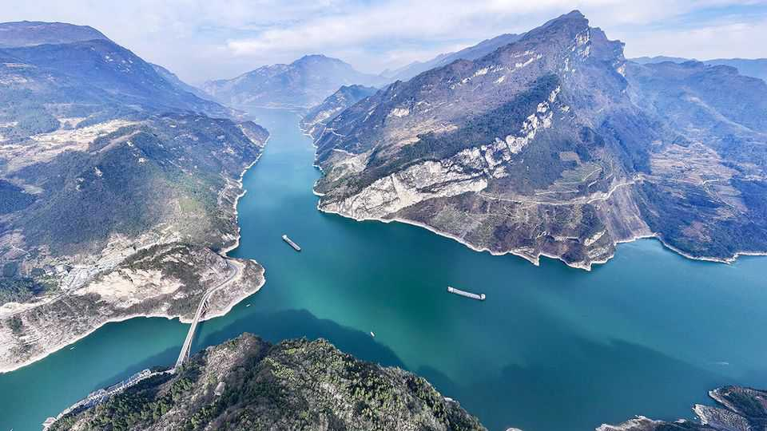
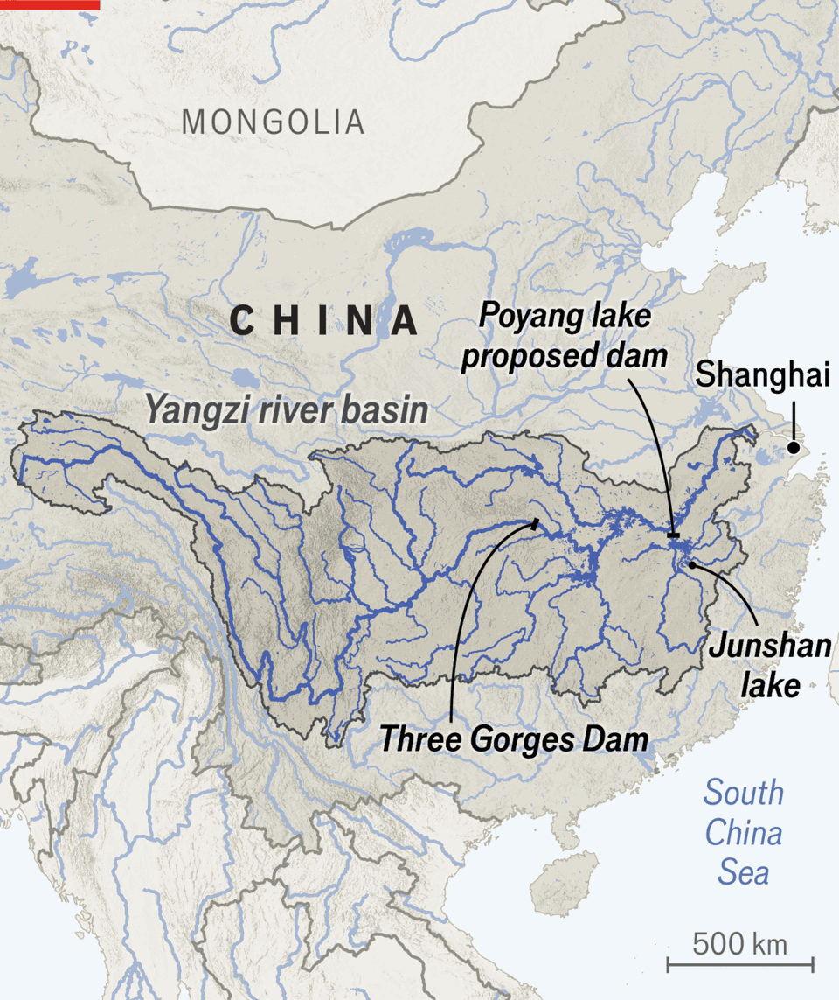

China’s mightiest river is coming back from the brink
But eco-authoritarianism is not all roses

Jul 30th 2026
THE MIGHTY Yangzi, running 6,300km from the Tibetan plateau to Shanghai, is sometimes known as China’s “mother river”. Yet it was not always treated with much respect. Sewage and industrial waste were poured into its waters. Millions of tonnes of fish were dragged out. Mega-dams clogged up its channels. It was all too much for some of the Yangzi’s most wondrous inhabitants. The baiji, a white-bellied, nearly sightless dolphin, is probably extinct; so is the gigantic, sword-nosed paddlefish. But not all the damage is permanent. Asia’s longest river is now making a remarkable comeback.

Sweeping protection measures in place since 2021 seem to be aiding a recovery. Fish biomass (the estimated total weight of all the fish in the river) has risen by over 200% since then, after seven decades of decline, according to a study released in February by researchers in China, Canada, America and France. In April other scientists witnessed a rare type of sturgeon breeding in the wild for the first time in two decades. Another study published in July found that a significantly greater proportion of fish in the river were reaching sexual maturity, good news for the prospects of the next generation. The latest government figures, meanwhile, say over 1,400 finless porpoises—a chubby, snub-nosed relative of the baiji that locals call a “river pig”—now live in the river’s basin, up from a low of 1,000 in 2017.
The Chinese Communist Party, once famous for pillaging from the natural world, has set to protecting parts of it. State-run media claim China is now a “global biodiversity champion”. At least in the case of the Yangzi, the results have been impressive. The river’s rapid turnaround might offer lessons for other ravaged watercourses, such as the Mekong in South-East Asia. But China’s “eco-authoritarian” approach—top-down and intolerant of resistance—deserves scrutiny before being imitated. The government does not listen to the people that its environmental policies harm. And sometimes it does not listen to environmentalists, either.
The heart of the Yangzi’s rescue package was a ten-year commercial fishing ban on the river, its major tributaries and the vast lakes in its basin. In the 1950s over 400,000 tonnes of fish were taken from the river every year; though by the time the ban came into force in 2021 the catch had fallen to less than 100,000 tonnes. River patrols, drones, surveillance cameras and tough fines help enforce the ban. Xi Jinping, China’s supreme leader, personally champions it, and in recent years local officials’ promotion prospects have been tied to environmental metrics. Some illegal fishing still occurs, but it appears to be relatively small-scale and diminishing; last year the number of related criminal cases fell by 40% from 2024.
At the same time the Yangzi’s waters have become cleaner. Officials closed or relocated thousands of chemical factories near its banks. They planted forests on its upper reaches to bind the soil together, so less slipped into the water. And they “spongified” many cities in the river’s basin by adding artificial wetlands, permeable surfaces and greenery to absorb more rainfall. That reduced flooding and helped clean stormwater before it entered the river. All this has made the waterway more hospitable to wildlife.
The Yangzi’s initial recovery is testimony to China’s “immense” ability to concentrate state resources on environmental problems, says Wang Limin, a veteran Chinese conservationist. He is encouraged most by the rise in the finless porpoise population because, as an “indicator species” and top predator, the porpoise is a sensitive measure of the health of the overall ecosystem. It is also cute enough to attract lots of public attention. Mr Wang hopes the tale of the Yangzi’s decline and rebound will make the Chinese people more environmentally aware.
Even so, the human cost of the Yangzi’s recovery has been substantial. Some 230,000 fishermen lost their jobs and their boats, which were destroyed or confiscated. According to China’s state-run media, they were given compensation, were retrained and in some cases found new jobs that were better paid than their old ones. But a visit to former fishing communities paints a different picture.
Jinxian county is on the banks of Junshan lake, south of the Yangzi’s main channel. Locals reckon that only one in five fishermen got compensation for the loss of their livelihood, and even that was far less than they used to earn. Most had to leave to work as migrant labourers in big cities. “No one listens to the common people. The government decided everything. You can’t argue with them,” says one bitter former fisherwoman who now runs a restaurant. A propaganda sign nearby offers cold comfort: “Ban fishing together; move forward together.”
At a village down the road Mr Zhang, shirtless in the stifling heat, points to the dock where his boat used to be moored, now overgrown with weeds. He once enjoyed the best fishing on the lake, he sighs. Encouraged by the government, he has raised swamp eels, a local delicacy, in ponds since the ban. But unlike fishing, aquaculture requires big investments that can go sour if demand slumps. “Everyone’s losing money this year,” he says.
China’s approach to biodiversity also suffers from some blind spots. Ever since the 1950s the government has had a love of dams, to control floods and generate hydroelectricity. A dozen gigantic ones have been built on the Yangzi, including the Three Gorges dam, the world’s largest, as well as thousands of smaller ones elsewhere in the river’s basin. They may have done as much damage to the river’s wildlife as fishing, because dams stop fish migrating up or downstream to spawn.
China continues to set out big targets for more dams. “The hydropower industry has really got a pass. Everybody else has stepped up, and nothing has changed with respect to hydropower,” says Steven Cooke of Carleton University in Ottawa, a co-author of the February paper. Unless dams are removed, or re-engineered to add channels for fish, all this infrastructure will limit the river’s further recovery.
Perhaps the most controversial current project in the river’s basin is a proposed 3km-wide dam to be built between Poyang, the country’s largest freshwater lake, and the Yangzi. China’s government says it will help control the lake’s water level in the dry season. But many fear it will destroy the habitat of migratory birds and finless porpoises. Earlier this year authorities approved the dam’s construction. For environmentalists, as for the Yangzi’s fishermen, the state is an unreliable ally. ■
Subscribers can sign up to Drum Tower, our new weekly newsletter, to understand what the world makes of China—and what China makes of the world.